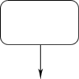
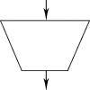
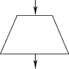
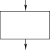
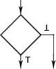
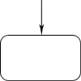
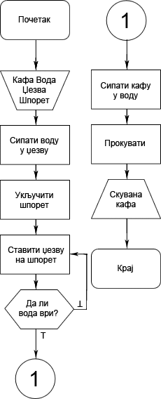

Симболи алгоритма
Почетак
Графички симбол за први алгоритамски корак.

Улаз
Графички симбол у којем се дефинишу улазне вредности алгоритма.

Излаз
Графички симбол у којем се дефинишу излазне вредности алгоритма.

Додела
Графички симбол у којем се врши додела вредности променљивој и обрада података.

Провера
Графички симбол у којем се на основу вредности Буловог израза одређује даљи ток алгоритма. Овај графички симбол има један улаз и два излаза.

Пренос тачке управљања
Графички симбол који омогућује пренос тачке управљања алгоритма. Овај симбол се користи ако стигнете до дна странице а нисте завршили програм.
Крај
Графички симбол за последњи алгоритамски корак.

Пример алгоритма

Лекције
- Основе
- Резервисане речи и специјални знаци
- Типови података
- Основни типови променљивих
- Симболи алгоритма
- Програмске наредбе